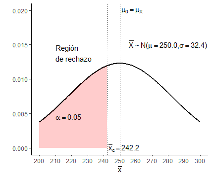
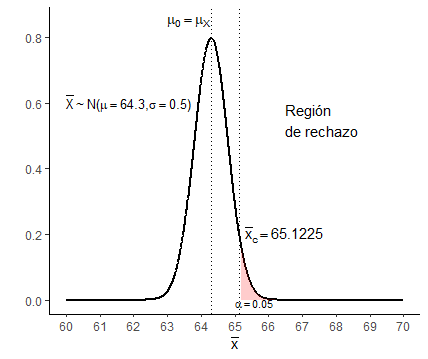
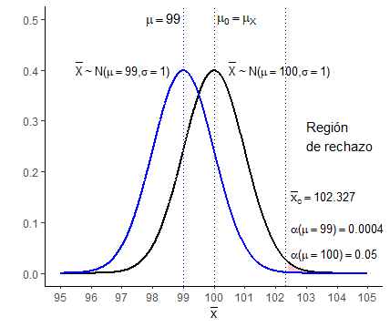
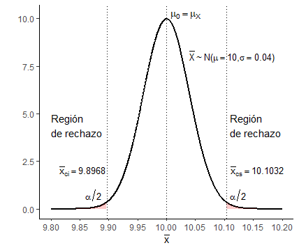
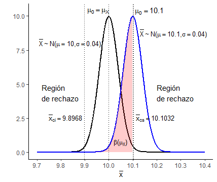
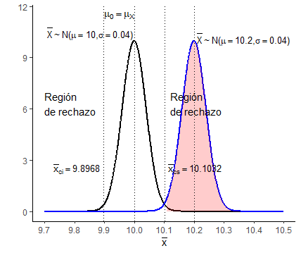

Prueba de Hipótesis
Ejercicios Guía de TP
E8.1
El control de recepción de las partidas de un tipo de hilo de coser industrial se realiza pesando una muestra de 10 ovillos de cada partida, rechazando la partida si el peso medio de la muestra resulta inferior a cierto valor crítico. El valor mínimo admisible del peso medio de los ovillos de toda la partida es de 250.0 gramos y se establece que la probabilidad máxima de rechazar una partida que cumple con dicha especificación es de 0.05. Se sabe además, por disponer de registros históricos extensos, que el peso de un ovillo es una variable aleatoria con distribución normal y desvío estándar de 15.0 gramos.
Plantear el test de hipótesis adecuado a esta situación indicando claramente la hipótesis nula y la alternativa, el nivel de significación, la región de rechazo y la regla de decisión. Indicar qué sucede con una partida de la que se extrajeron 10 ovillos cuyo peso promedio fue de 242.4 gramos.
\(X\): variable aleatoria continua que representa el peso de un ovillo de hilo de coser, expresado en gramos, \(X \sim N(\mu_X, \enspace \sigma_X = 15.0\text{gr})\)
Muestra IID: \(X_1, X_2, \ldots, X_n, \enspace n = 10\)
Estadístico de prueba: \(\overline{X} = \frac{1}{n}\sum_{i=1}^{n}X_i \enspace \rightarrow \enspace \overline{X} \sim N(\mu_X, \enspace \frac{\sigma_X}{\sqrt{n}}) \enspace \rightarrow \enspace \hat{\mu_X} = \overline{X}\)
\(\mu_0 = 250.0\text{g}\)
\(H_0: \mu_X = \mu_0\)
\(H_A: \mu_X \lt \mu_0\)
Nivel de significación: \(\alpha = P(\text{Rechazar } H_0 | H_0 \text{ es verdadera}) = P(\text{Error tipo I}) = 0.05\)
\(P(\frac{\overline{x} - \mu_0}{\sigma_X / \sqrt{n}} \leq z_c) = 0.05 \enspace \rightarrow \enspace z_c = -1.645 \enspace \rightarrow \enspace \overline{x}_c = z_c\frac{\sigma_X}{\sqrt{n}} + \mu_0 \enspace \rightarrow \enspace \overline{x}_c = 242.2\text{g}\)
Región de rechazo: \(\overline{X} \leq \overline{x}_c \enspace \rightarrow \enspace \overline{X} \leq 242.2\text{g}\)
Regla de decisión: Rechazar \(H_0\) si \(\overline{X} \leq 242.2\text{g}\)

Figura 1: Prueba Z bajo hipótesis nula
Para la partida de ovillos en cuestión:
\(\boxed{\overline{x} = 242.4\text{g} \gt 242.2\text{g} \enspace \rightarrow \enspace \text{No rechazar } H_0 \enspace \rightarrow \enspace \text{Aceptar la partida}}\)
E8.2
Un fabricante de caucho sintético declaró que la dureza promedio del caucho que produce es de 64.3 grados Shore. Como habría razones para pensar que con esta afirmación el fabricante daba un valor promedio poblacional inferior al real, se midió la dureza en 16 especímenes seleccionados al azar. El experimento proporcionó una dureza media muestral de 65.2 grados Shore. La experiencia previa indica que el desvío estándar de la variable aleatoria correspondiente a la dureza del caucho es de 2.0 grados Shore, y que esta variable puede considerarse normalmente distribuida. Usar un nivel de significación de 0.05 para decidir si debe rechazarse la declaración del fabricante. Plantear claramente la prueba de hipótesis correspondiente.
\(X\): variable aleatoria continua que representa la dureza promedio del caucho, expresado en grados Shore, \(X \sim N(\mu_X, \enspace \sigma_X = 2.0)\)
Muestra IID: \(X_1, X_2, \ldots, X_n, \enspace n = 16\)
Estadístico de prueba: \(\overline{X} = \frac{1}{n}\sum_{i=1}^{n}X_i \enspace \rightarrow \enspace \overline{X} \sim N(\mu_X, \frac{\sigma_X}{\sqrt{n}}) \enspace \rightarrow \enspace \overline{x} = 65.2 \text{ grados Shore}\)
\(H_0: \mu_X = \mu_0\)
\(H_A: \mu_X \gt \mu_0\)
Nivel de significación: \(\alpha = P(\text{Rechazar } H_0 | H_0 \text{ es verdadera}) = P(\text{Error tipo I}) = 0.05\)
\(P(\frac{\overline{x} - \mu_0}{\sigma_X / \sqrt{n}} \geq z_c) = 0.05 \enspace \rightarrow \enspace z_c = 1.645 \enspace \rightarrow \enspace \overline{x}_c = z_c\frac{\sigma_X}{\sqrt{n}} + \mu_0 \enspace \rightarrow \enspace \overline{x}_c = 65.1225\text{ grados Shore}\)
Región de rechazo: \(\overline{X} \gt \overline{x}_c \enspace \rightarrow \enspace \overline{X} \gt 65.1225\text{ grados Shore}\)
Regla de decisión: Rechazar \(H_0\) si \(\overline{X} \gt 65.1225\text{ grados Shore}\)

Figura 2: Prueba Z bajo hipótesis nula
Con los resultados de la experimentación puede concluirse que hay razones significativas a un nivel \(\alpha = 0.05\) para rechazar la afirmación del fabricante:
\(\boxed{\overline{x} = 65.2\text{ grados Shore} \gt 65.1225\text{ grados Shore} \enspace \rightarrow \enspace \text{Rechazar } H_0}\)
E8.3
Sea \(X_1, X_2, \ldots, X_n\) una muestra aleatoria de una distribución normal de población con valor conocido de \(\sigma\).
a) Para probar la hipótesis nula \(H_0: \mu = \mu_0\) contra la hipótesis alternativa \(H_A: \mu \gt \mu_0\) (donde \(\mu_0\) es un número fijo), demostrar que la prueba con estadístico de prueba \(\overline{X}\) y región de rechazo \(\overline{X} \geq \mu_0 + 2.327\frac{\sigma}{\sqrt{n}}\) tiene nivel de significación 0.01.
El nivel de significación \(\alpha\) está relacionado con la probabilidad de cometer un error de tipo I, esto es:
\(P(\frac{\overline{x} - \mu_0}{\sigma_X / \sqrt{n}} \geq z_c) = \alpha\)
Por lo que para hallar el valor de \(\alpha\) relacionado con un valor crítico \(z_c = 2.327\), hay que hallar la probabilidad de que el estadístico de prueba supere dicho valor:
\(P(Z \geq z_c) = 1 - P(Z \lt z_c) = 1 - \Phi(z_c) = \alpha \enspace \rightarrow \enspace \Phi(z_c) = 1 - \alpha\)
Para hallar este valor o bien empleamos algún software estadístico (ver nota al final del ejercicios), o bien lo obtenemos de la tabla de probabilidad acumulada de la distribución normal estándar, pero dado que la precisión de las mismas para \(z\) es de dos decimales, será necesario realizar una interpolación lineal entre los resultados \(\phi(2.32) = 0.9898\) y \(\phi(2.33) = 0.9901\), lo que arroja:
\(\boxed{\Phi(2.327) \simeq \Phi(2.32) + \frac{\Phi(2.33) - \Phi(2.32)}{2.33 - 2.32}(2.327 - 2.32) \simeq 0.98989 \enspace \rightarrow \enspace \alpha \simeq 0.01}\)
b) Supongamos que el procedimiento de la parte a se utiliza para probar la hipótesis nula \(H_0: \mu \leq \mu_0\) contra la hipótesis alternativa \(H_0: \mu \gt \mu_0\). Si \(\mu_0 = 100\), \(n = 25\) y \(\sigma = 5\), ¿cuál es la probabilidad de cometer un error tipo I si fuese \(\mu = 99.5\)?, ¿y si fuese \(\mu = 99.0\)? En general, ¿qué se puede decir acerca de la probabilidad de un error tipo I cuando el valor real de \(\mu\) es menor que \(\mu_0\)?
Para el procedimiento especificado en a:
Región de rechazo: \(\overline{X} \gt \overline{x}_c = z_{c_{1 - \alpha}}\frac{\sigma}{\sqrt{n}} + \mu_0 \enspace \rightarrow \enspace \overline{x}_c = 102.327\)
Luego, la probabilidad de cometer un error de tipo I viene dada por:
\(P(\text{Error tipo I}) = \alpha(\mu) = 1 - P(X \leq \overline{x}_c) = 1 - P(Z \leq \frac{\overline{x}_c - \mu}{\sigma / \sqrt{n}}) = 1 - \Phi(\frac{\overline{x}_c - \mu}{\sigma / \sqrt{n}})\)
De esta forma se tiene:
\(\boxed{\alpha(\mu = 99.5) \simeq 0.0023 \\ \alpha(\mu = 99.0) \simeq 0.0004}\)
Observando la expresión del error de tipo I, se concluye que a medida que la media \(\mu\) se aleja de \(\mu_0\), \(\alpha\) disminuye, lo cual es consistente a lo esperado, ya que si la media poblacional es mucho menor al valor de la hipótesis nula, entonces la probabilidad de rechazarla dado que ésta sea verdadera será menor.

Figura 3: Error de tipo I como función de la media poblacional µ
Nota:
El valor de \(\alpha\) que arroja un valor crítico \(z_{c_{\alpha}} = 2.327\) puede obtenerse con mayor exactitud empleando software estadístico. A continuación se indica el cálculo con R:
pnorm(q = 2.327, mean = 0, sd = 1, lower.tail = FALSE, log.p = FALSE)## [1] 0.009982633E8.4
La calibración de una balanza debe verificarse al pesar 25 veces un espécimen de prueba de 10kg. Se supone que los resultados de diferentes pesadas, \(\{X_1, X_2, \ldots, X_{25}\}\), son independientes entre sí y que el peso en cada intento está normalmente distribuido con \(\sigma = 0.200kg\). Sea \(\mu\) el verdadero promedio de lectura de peso de la balanza.
a) ¿Cuáles hipótesis deben plantearse?
\(X\): variable aleatoria continua que representa el peso de un objeto, expresado en kg, \(X \sim N(\mu_X, \enspace \sigma_X = 0.200)\)
Muestra IID: \(X_1, X_2, \ldots, X_n, \enspace n = 25\)
Estadístico de prueba: \(\overline{X} = \frac{1}{n}\sum_{i=1}^{n}X_i \enspace \rightarrow \enspace \overline{X} \sim N(\mu_X, \frac{\sigma_X}{\sqrt{n}})\)
\(\boxed{H_0: \mu_X = \mu_0 \enspace \rightarrow \enspace \mu_0 = 10\text{kg} \\ H_A: \mu_X \ne \mu_0}\)
b) Si la balanza debe recalibrarse cuando \(\overline{X} \geq \overline{x}_{cs} = 10.1032 \text{kg}\) o \(\overline{X} \leq \overline{x}_{ci} = 9.8968 \text{kg}\), ¿cuál es la probabilidad de que la recalibración se realice cuando en realidad no es necesaria? ¿A qué tipo de error corresponde esa probabilidad?
La probabilidad de que la recalibración se realice cuando en realidad no es necesaria implica rechazar la hipótesis nula cuando ésta es verdadera, por lo que:
\(\boxed{\begin{equation*}\begin{split} P(\text{Rechazar }H_0 | H_0 \text{ es verdadera}) = P(\text{Error tipo I}) = \alpha & = 2P(Z \leq \frac{\overline{x}_{ci} - \mu_0}{\sigma / \sqrt{n}} = -2.58) \\ & = 0.0098 \simeq 0.001 \end{split} \end{equation*}}\)

Figura 4: Error de tipo I
c) ¿Cuál es la probabilidad de que la recalibración se considere innecesaria cuando de hecho \(\mu = 10.1\text{kg}\)? ¿Cuál cuando \(\mu = 9.8\text{kg}\)? ¿A qué tipo de error corresponde esas probabilidades?
La probabilidad de que la recalibración se considere innecesaria cuando de hecho lo es, implica no rechazar la hipótesis nula cuando ésta es falsa, por lo que el error de tipo II es una función de la media poblacional \(\mu_X\):
\(\begin{equation*}\begin{split} P(\text{No rechazar }H_0 | H_0 \text{ es falsa}) = P(\text{Error tipo II}) = \beta(\mu_X) & = P(\overline{x}_{ci} \leq \overline{X} \leq \overline{x}_{cs} | \mu_X \neq \mu_0) \\ & = \Phi(\overline{z}_{cs} | \mu_X \neq \mu_0) - \Phi(\overline{z}_{ci} | \mu_X \neq \mu_0) \end{split} \end{equation*}\)
\(\boxed{\beta(\mu_X = 10.1) = 0.5319 \\ \beta(\mu_X = \enspace 9.8) = 0.0078}\)

Figura 5: Error de tipo II
d) ¿Cuál es la probabilidad de que se considere necesaria la recalibración cuando \(\mu = 10.2\text{kg}\)? ¿Constituye este resultado una probabilidad de error? Explicar.
La probabilidad pedida no constituye una probabilidad de error, dado que implica una decisión correcta: rechazar la hipótesis nula dado que ésta es verdadera, esto es, \(1 - \beta\), la potencia de la prueba:
\(\boxed{\begin{equation*}\begin{split} P(\text{Rechazar }H_0 | H_0 \text{ es falsa}) = 1 - \beta(\mu_X) & = 1- P(\overline{x}_{ci} \leq \overline{X} \leq \overline{x}_{cs} | \mu_X \neq \mu_0) \\ & = 1 - [\Phi(\overline{z}_{cs} | \mu_X \neq \mu_0) - \Phi(\overline{z}_{ci} | \mu_X \neq \mu_0)] \\ & = 1 - [\Phi(-2.42) - \Phi(-7.58)] \\ & = 0.9922 \end{split} \end{equation*}}\)

Figura 6: Decisión correcta
e) Sea \(Z = (\overline{X} - 10) / \sigma / \sqrt{n}\). ¿Para qué valor \(c\) es la región de rechazo de la parte b equivalente a la región de dos colas, ya sea \(z \geq c\) o \(z \leq c\)?
En el punto b se determinó que los valores críticos del estadístico \(Z\) eran \(z_{ci} = -2.58\) y \(z_{cs} = 2.58\), por lo que \(\boxed{c = 2.58}\)
f) Si el tamaño de la muestra fuera sólo 9 en lugar de 25, ¿cómo se alteraría el procedimiento de la parte b para que \(\alpha = 0.05\)?
De la tabla de probabilidades de la normal estándar, los valores críticos del estadístico \(Z\) para un nivel de significancia \(\alpha = 0.05\) son \(z_{ci} = -1.96\) y \(z_{ci} = 1.96\), por lo que los valores críticos del estadístico \(\overline{X}\) serán:
\(z_c = \frac{\overline{x}_c - \mu_0}{\sigma / \sqrt{n}} \enspace \rightarrow \enspace \overline{x}_c = \mu_0 + \frac{\sigma}{\sqrt{n}} \\ \overline{x}_{ci} = 9.8693\text{kg} \\ \overline{x}_{cs} = 10.1307\text{kg}\)
Lo que arroja:
Región de rechazo: \(\overline{X} \lt 9.8693\text{kg} \vee \overline{X} \gt 10.1307\text{kg}\)
g) Mediante el uso de la parte f, ¿qué se concluye de los siguientes datos muestrales? Datos: \(\{9.981, 10.006, 10.107, 9.888, 9.793, 9.728, 10.439, 10.214, 10.190\}\) todos en kg.
Con los datos muestrales se obtiene \(\overline{x}\), el valor observado del estadístico de prueba:
\(\overline{x} = \frac{1}{n}\sum_{i=1}^{n}x_i = 10.0384\text{kg}\)
\(\boxed{ \overline{x}_{ci} \leq \overline{x} = 10.0384\text{kg} \leq \overline{x}_{cs} \enspace \rightarrow \enspace \text{No es necesario recalibrar a un nivel de significación de } \alpha = 0.05}\)
E8.4
Un fabricante de fusibles asegura que con una sobrecarga del 20% sus fusibles se fundirán al cabo de 12.40 minutos de promedio (como mínimo). Para comprobar esta afirmación, una muestra de \(n = 20\) de los fusibles fue sometida a una sobrecarga de un 20% y los tiempos que tardaron en fundirse tuvieron una media muestral \(\overline{x}\) de 10.63 minutos y un desvío estándar muestral \(s\) de 2.48 minutos. Si se supone que los datos constituyen una muestra aleatoria de una distribución normal, ¿tienden a apoyar o refutar la afirmación del fabricante, a un nivel de significación del 0.01? ¿Y a un nivel del 0.001? Plantear la prueba de hipótesis correspondiente y determinar la región de rechazo.
\(X\): variable aleatoria continua que representa el tiempo promedio en que se funde un fusible con una carga del \(20%\), expresado en minutos, \(X \sim N(\mu_X, \enspace \sigma_X)\)
Muestra IID: \(X_1, X_2, \ldots, X_n, \enspace n = 20, \enspace \overline{x} = 10.63 \text{min}, \enspace s = 2.48\text{min}\)
Estadístico de prueba: \(T = \frac{\overline{X} - \mu_X}{S / \sqrt{n}} \enspace \rightarrow \enspace T \sim t(\nu = n - 1)\)
\(H_0: \mu_X = \mu_0, \enspace \mu_0 = 12.40\text{min}\)
\(H_A: \mu_X \lt \mu_0\)
Región de rechazo: \(T \lt t_{c_{\alpha,\nu}} = \frac{\overline{x}_c - \mu_X}{s / \sqrt{n}}\)
El valor crítico del estadístico de prueba viene dado por el nivel de significación que se pretenda para la prueba:
\(P(\text{Error tipo I}) = \alpha = P(T \lt t_{c_{\alpha,\nu}})\)
De la tabla de probabilidad para la distribución t de Student, puede obtenerse por interpolación los valores críticos aproximados para los distintos valores de \(\alpha\):
\(t_{c_{0.01,19}} \simeq -2.55 \enspace \rightarrow \enspace \text{Región de rechazo | }\alpha = 0.01 \text{: } \enspace T \lt -2.55 \\ t_{c_{0.001,19}} \simeq -3.50 \enspace \rightarrow \enspace \text{Región de rechazo | }\alpha = 0.001 \text{: } \enspace T \lt -3.50\)
Finalmente, con los datos obtenidos en la muestra se tiene \(t_{19} = -3.1918\), por lo que se puede concluir:
\(\boxed{t_{19} \lt t_{c_{0.01,19}} \enspace \rightarrow \enspace \text{Existe evidencia significativa para rechazar la afirmación del fabricante} \\ t_{19} \gt t_{c_{0.001,19}} \enspace \rightarrow \enspace \text{No existe evidencia significativa para rechazar la afirmación del fabricante}}\)
Nota:
Los cuantiles \(t_{c_{\alpha,\nu}}\) pueden obtenerse con mayor exactitud empleando software estadístico. A continuación se indica el cálculo con R:
qt(p = 0.01, df = 19, lower.tail = TRUE, log.p = FALSE)## [1] -2.539483qt(p = 0.001, df = 19, lower.tail = TRUE, log.p = FALSE)## [1] -3.5794